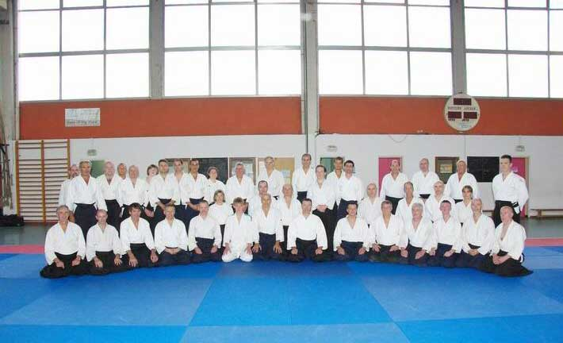
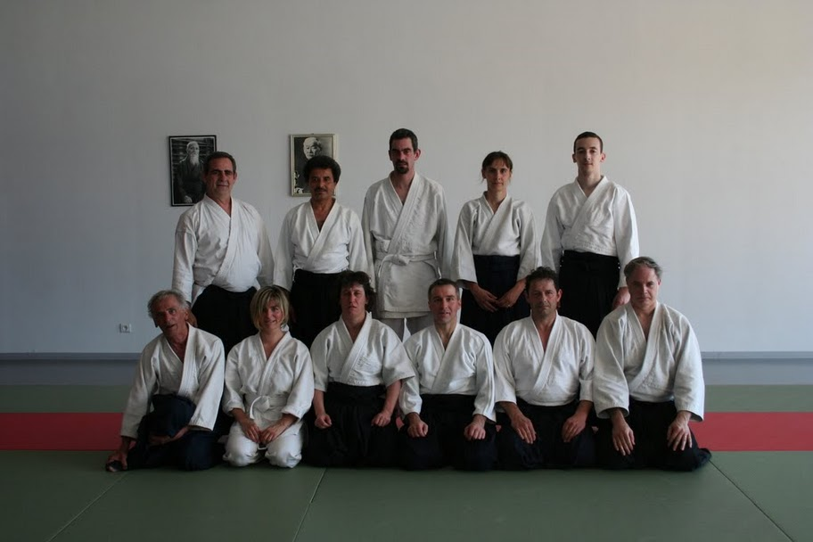
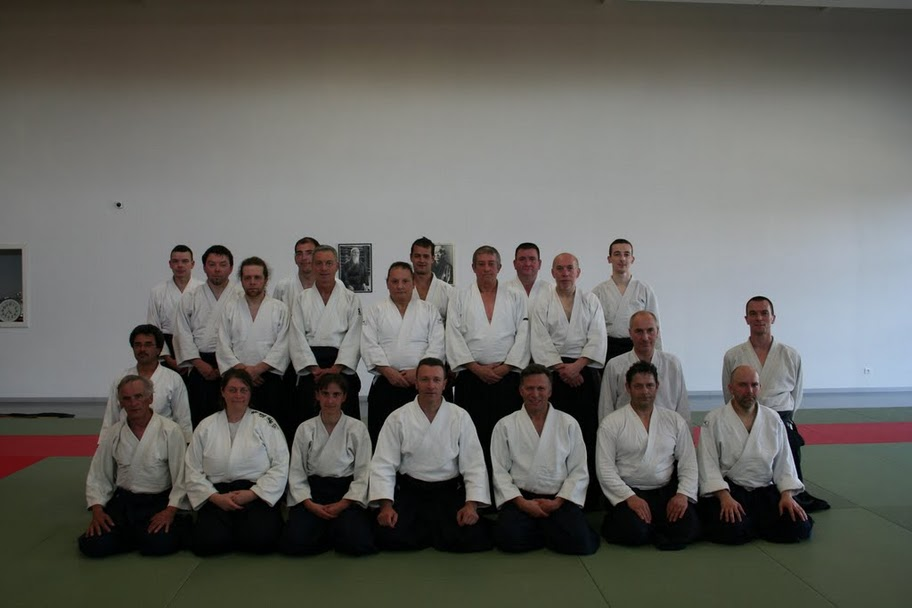

PHOTOS
________________________________________________________
!!! CONSULTER EGALEMENT
LES STAGES PASSES : ARCHIVES
LA "RETROSPECTIVE" (à gauche de l'écran)
pour les STAGES ou EVENEMENTS LORRAINS / FEDERAUX!!!
________________________________________________________
- 1ère Formation Ceintures Noires animée par Alain BACCO, 4ème dan, le 25 septembre 2010 à Talange

"Le premier stage de la saison avec une bonne fréquentation, 41 pratiquants.
Le travail, proposé par Alain, sur le placement et le déplacement était très constructif,
il permet de mettre les choses en place pour le début de la saison." (Guy Beets)
Voir les PHOTOS

- 5ème Stage de Bases animé par Rémy Hohlfeld et Geneviève Duc le 23/05/2010 à Cattenom.
Voir les PHOTOS et le DIAPORAMA.

- 5ème Formation des Ceintures Noires animée par Michel Merg le 22/05/2010 à Cattenom.
Voir les PHOTOS et le DIAPORAMA.

- PREPARATION GRADES à MANOM
avec Jean-Pierre LAFONT et Nordine BELGHACHEM
les 15 et 16 mai 2010
-
Michel FALZONE s'est excusé de son absence, il était cloué au lit avec une sévère hernie discale.
Les stagiaires ont profité de l'enseignement de Jean-Pierre LAFONT qui a bien voulu le remplacer au pied levé,
il a animé cette formation en duo avec Nordine BELGHACHEM.
Les pratiquants sont repartis avec toutes les réponses qu'ils se posaient sur le déroulement du passage de grade,
la restitution de leur passage à blanc a mis l'accent sur les points forts et faibles de chacun.
Voir les PHOTOS.

- AIKI-DIMANCHE à AMNEVILLE
- Stage de Gilbert MILLIAT à Farschviller les 17 et 18 avril 2010
" Un grand merci à Gilbert MILLIAT qui comme d'habitude,
avec sa grande générosité et son enthousiasme,
nous a rappelé les fondements de la technique,
il a rappelé l'importance d'un enseignement juste dans l'école TAMURA avec les bases données par Maître TAMURA,
il a insisté sur la nécessité que les enseignants se forment pour mieux pouvoir former ses élèves.
Gilbert a aussi fortement insisté sur le travail d'Aïté, donner une attaque juste pour que Tori puisse donner une réponse juste."
Voir les PHOTOS.

- 4ème Stage de Bases avec Bernard BOUR
le dimanche 14 mars 2010 à Amanvillers.
Eric Havez étant absent, c'est Bernard BOUR qui a animé l'ensemble du stage.
Voir les PHOTOS.

- 4ème Stage Formation Continue des Ceintures Noires avec Franco PADDEU
le samedi 13 mars 2010 à Amanvillers.
Voir les PHOTOS.

- 3ème Stage de Bases animé par Nora BETTAHAR et Rémy HOHLFELD
le dimanche 24 janvier 2010 à Manom.
Voir les PHOTOS

- 3ème Stage Formation continue des Ceintures Noires avec Guy BEETS
le samedi 23 janvier 2010 à Manom.
Voir les PHOTOS